[N-World Contents] [Book Contents] [Prev] [Next] [Index]
Hand
In this chapter you'll learn how to build a hand. You can use the technique described here to create both hands and feet on most types of creatures.
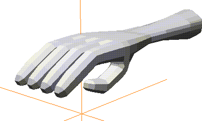
In this Chapter
You'll learn the following techniques:
New Commands
Pulling Out the Fingers
1. Create a cube.
2. Select the face on the positive X side of the cube.
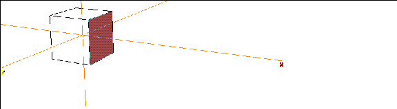
Figure 7.1 Select the face on the side of the cube
3. Extrude the face three times.
- This will create four segments; each of these will eventually be a finger.
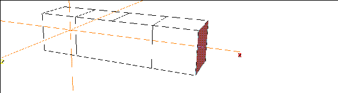
Figure 7.2 After extruding it three times
4. Collect the faces along the front.
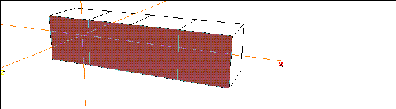
Figure 7.3 Collect the faces on the front of the body
5. (SHIFT-L), then (CLICK-L) on Extrude to move the faces forward.
- This extrusion will form the first bone on each finger, so you may want to adjust your camera so you can see how long your fingers will be.
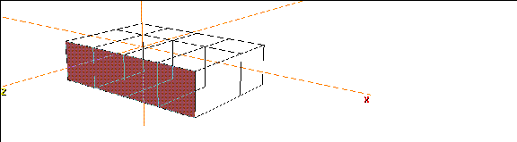
Figure 7.4 Extrude the faces to form the first bone on the finger
6. (SHIFT-L), then (CLICK-L) on Scale to scale the faces.
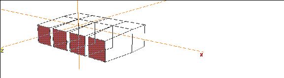
Figure 7.5 Scale the tips of the fingers
7. (SHIFT-L), then (CLICK-M) on Rotate.
Figure 7.6 Rotate the tips of the fingers downward
8. Extrude the faces again.
- This will form the second joint of the fingers.
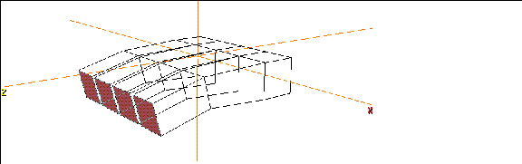
Figure 7.7 The second finger bone
9. Rotate the faces down again, like you did in step 7.
- This time, rotate them a little more so that the fingertips really point down.
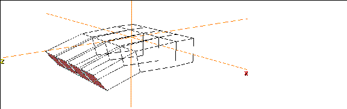
Figure 7.8 The second finger bone
10. Repeat step 8 to create the last finger joint on the hand, then scale the tips.
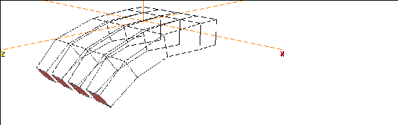
Figure 7.9 The basic fingers
The Thumb
To pull out the thumb, we'll take advantage of one of N-Geometry's nice polygonal tools.
11. Move the camera so that you're looking at the underside of the hand.
Figure 7.10 Starting the thumb
12. (CLICK-L) on Lift from Edge.
- The Lift from Edge command lifts a face from a body, using one segment along the perimeter of the selected face as a "hinge."
13. Move the cursor over the selected face, and (CLICK-L) on the segment on the back of the thumb.
- After selecting the segment move the mouse to the left to pull out a starting point for the thumb:
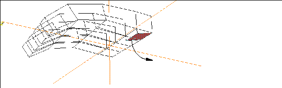
Figure 7.11 Pulling down the thumb
14. Repeat step 13, making sure the face toward the front of the hand is big enough to pull out as a thumb.
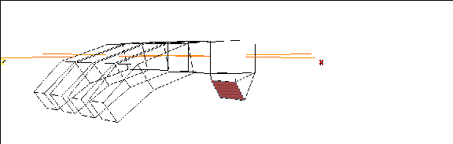
Figure 7.12 Creating the face from which to pull out the thumb
15. Now pull out the bones on the thumb like you did for the finger, as described in steps 8 and 9.
16. Scale the tip of the thumb when you're done:
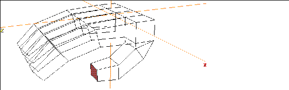
Figure 7.13 Completed thumb
The Hand and Wrist
Now lets finish working on the back part of the hand.
17. Turn the camera around so that you're looking at the back of the hand, then collect the faces along the back.
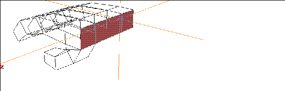
Figure 7.14 Collect the faces opposite those from which you pulled out the fingers
18. (SHIFT-L) on the collection, then (CLICK-L) on Merge Region.
- The faces are combined into a single face.
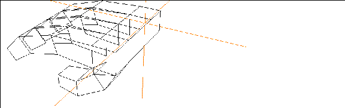
Figure 7.15 Merge the collected faces into one face with Merge Region
19. Extrude the rear face straight back, then Scale it.
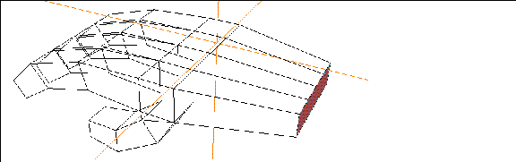
Figure 7.16 Build the "hand" with an Extrude then a Scale operation
20. Extrude the face slightly to create a wrist joint.
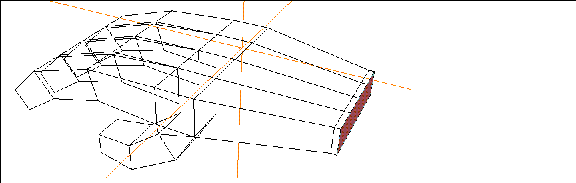
Figure 7.17 Extrude again to create a wrist joint
21. Extrude the back face out, so that it's off the screen.
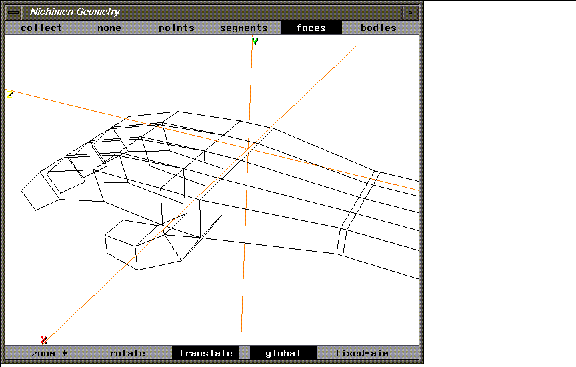
Figure 7.18 Extrude the face off the edge of the screen
Now, because the face is still selected, you can use the "a" hot key to aim the camera at that element.
22. Press the "a" hot key.
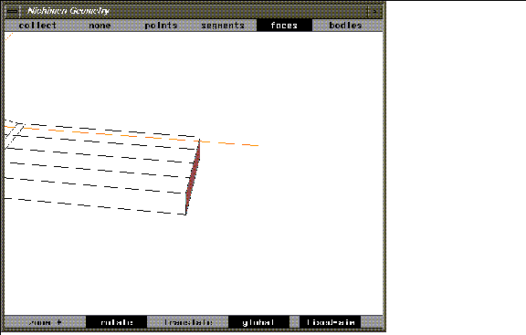
Figure 7.19 You can use the aim camera hot key even if the element is beyond the window's edge
Adjust the camera so that you have a better view of the hand.
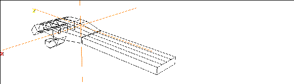
Figure 7.20 Move the camera so you can see the back of the hand
23. (SHIFT-L) on the back face, then (CLICK-L) on Sphericize.
- A menu appears, asking you to specify the midpoint for the Sphericize operation. Sphericize moves all the points the same distance from some other point. So we need to pick both the center and a point that defines the radius.
- (CLICK-L) on This Element's Midpoint.
24. Now, move the mouse over the selected face, and pick one of the corner points.
- This defines our "radius." When you sphericize the face, all the points along its perimeter are moved the same radius from the face's midpoint as the selected point.
- When asked to specify a factor, use the default of 1.0, then (CLICK-L) on Do It. The back face is sphericized-note that the number of vertices on the selected element will determine how "spherical" something can be. Generally, you'll get better results with more vertices, but only to a degree. You need to experiment with the trade-offs of adding geometry and getting smoother results.
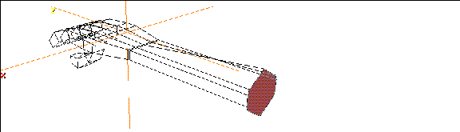
Figure 7.21 Rounding the back of the forearm
25. Extrude the back of the forearm slightly once more.
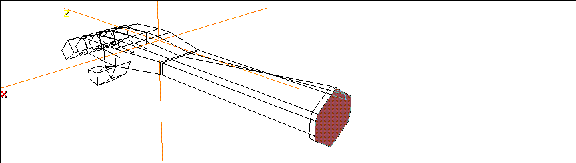
Figure 7.22 Extrude the back face one final time
- (When we smooth the hand later, this helps maintain definition on this portion of the model.)
Smoothing w/History
Like we did in our earlier tutorial with the cube, let's create a smoothed copy of the object that can be controlled with our lo-res version.
26. (CLICK-L) on bodies on the element sensitivity menu.
27. (SHIFT-L) on the hand.
28. (CTRL-L) on Smooth.
- In the dialog box that appears:
- (Note that the rear of the model retained its shape, thanks to the last extrude we performed. If we hadn't performed that Extrude, the entire end of the arm would have been smoothed down to a "dome." See the section "Smoothing Tips," on page 11-22.)
29. (CLICK-L) on objects on the element sensitivity menu.
30. (SHIFT-L) on the smoothed copy of the hand.
31. (CLICK-L) on Axis Move>Y to move the smoothed copy up along the Y axis.
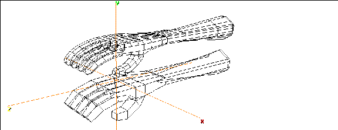
Figure 7.23 Transform the smoothed copy up along the Y axis
Using the 3D Lasso
Sometimes you want to collect all the elements (points, segments, faces) in a three-dimensional area. You can use N-Geometry's 3D lasso to make such a collection.
Suppose for example, that we want to rotate the thumb upward:
32. (CLICK-L) on faces on the element sensitivity menu.
33. (CTRL+ALT-L) on the N-Geometry window to enter the 3D collect mode.
34. (DRAG-L) to draw a lasso around the faces you want to select.
- Collect the faces around the tip of the thumb on the lo-res hand:
- Note. Remember, this is a 3D lasso! Any visible elements of the specified type that fall within the lasso you draw will be collected.
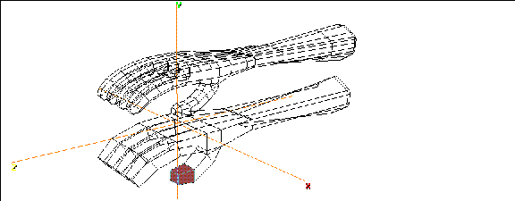
Figure 7.24 Select the faces on the tip of the thumb
35. (SHIFT-L), then (CLICK-M) on Rotate.
Figure 7.25 Choosing a segment about which to rotate
36. Move the mouse left and right to rotate the faces on the control object, driving the hi-res object.
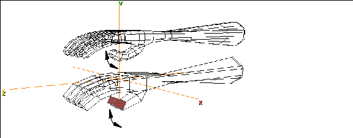
Figure 7.26 Drive the hi-res version of the object using the lo-res version
Repeat the Rotate command, selecting different portions of the hand and different segments around which to pose the fingers.
You might also try selecting all the faces on the front part of the hand and rotating from the wrist joint.
Congratulations!
You've now learned how to create a basic hand for any type of creature. The same techniques can be used, expanded, and enhanced to create more complex hands, feet, pods, tentacles, or whatever kind of appendage your character may require.
Again, creating both a hi-res and lo-res version of an object can speed up test-animations, and also makes it easy to create a low polygon count character for game export and a higher resolution version for any full motion video you may want to create of the same character!
[N-World Contents] [Book Contents] [Prev] [Next] [Index]
Another fine product from Nichimen documentation!
Copyright © 1996, Nichimen Graphics Corporation. All rights
reserved.